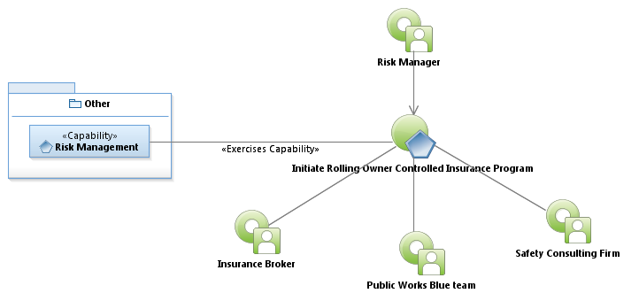
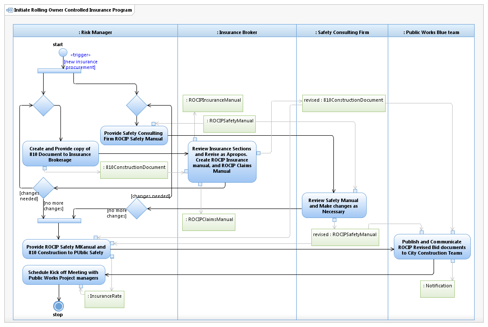

Use Case Model: Initiate Rolling Owner Controlled Insurance Program
Architect: Aaron Brown, IT Enterprise Architect Senior
Date Last Modified: 01/18/2013
User Review: Leslie Milvo, Wage Continuation Manager
Date: 01/18/2013
Prepare for Project Initiation into a new Rolling Owner Controlled Insurance Program. A ROCIP program lasts for 5 years. bThis will ultimately produce the ROCIP Insurance Manual and the ROCIP Claims Manual to be used throughout the program.
Follow link to Role Definitions

Use Case Model: Initiate Rolling Owner Controlled Insurance Program

Activity Model: Initiate Rolling Owner Controlled Insurance Program